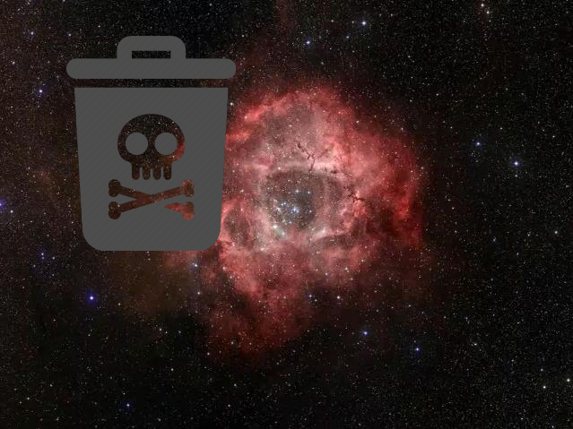
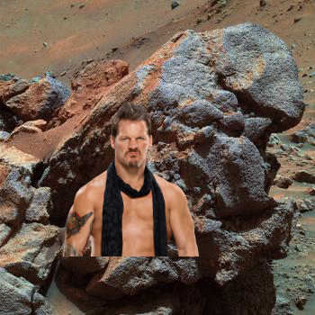
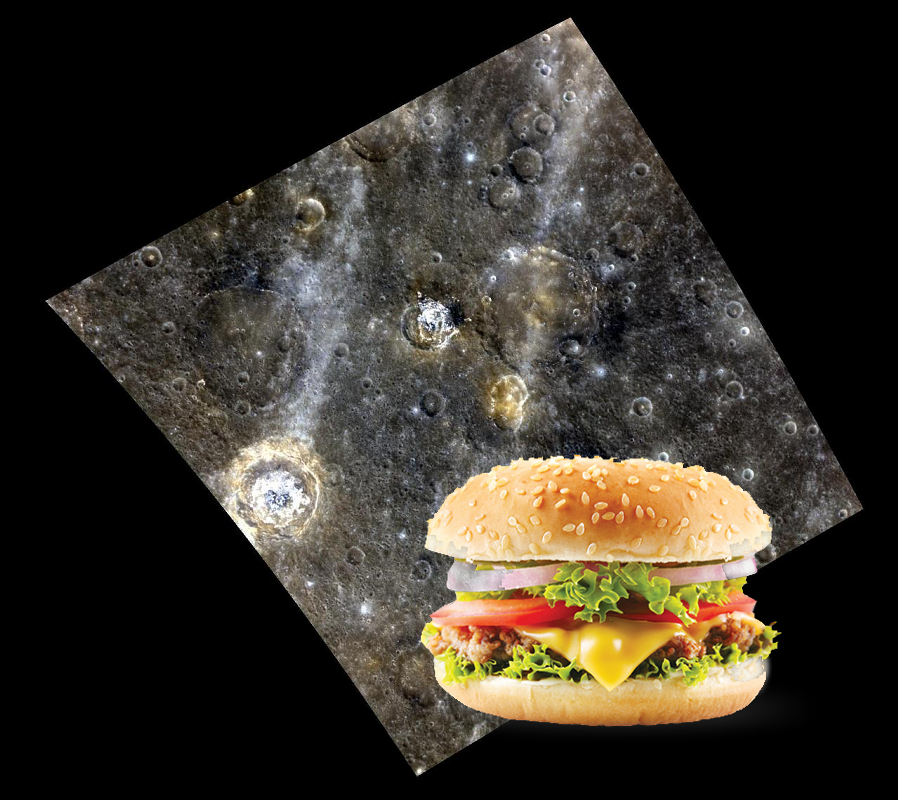
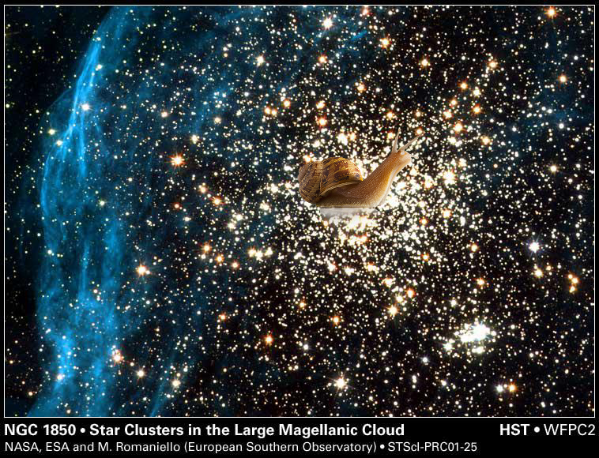
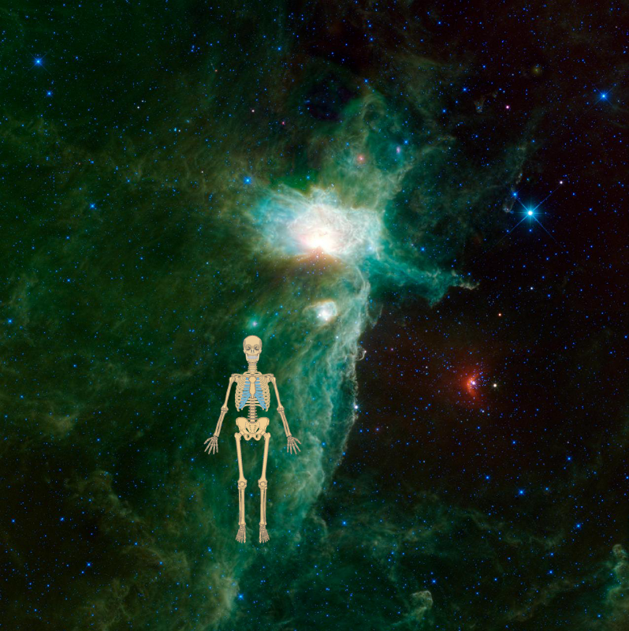
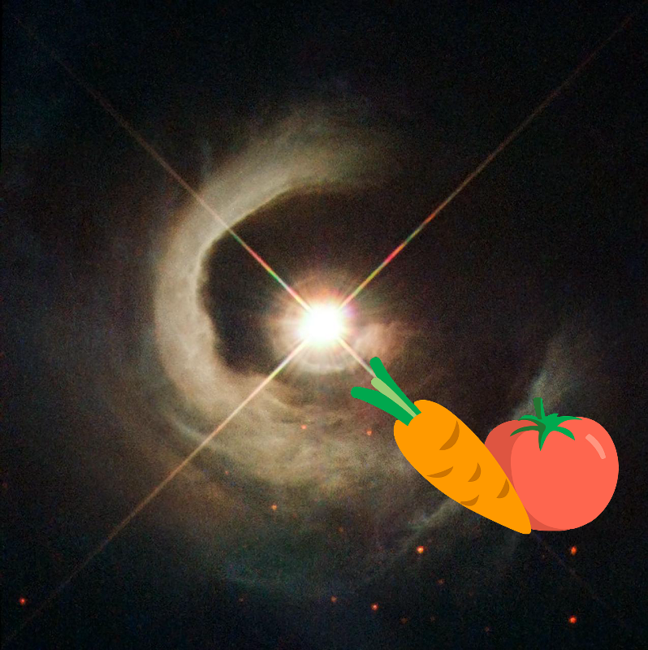
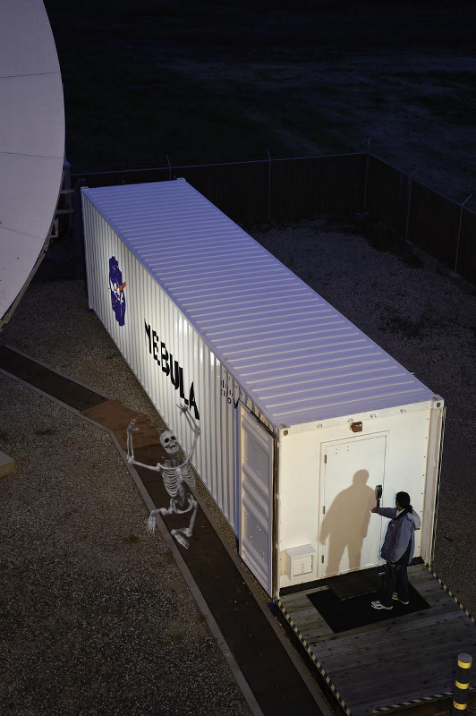
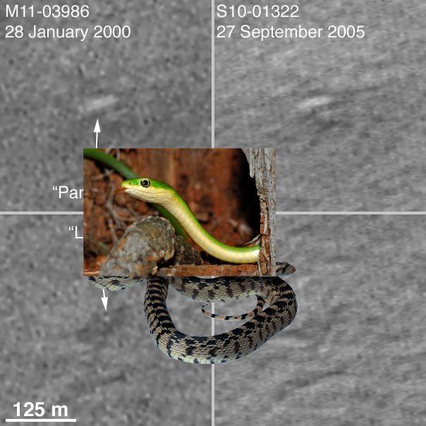
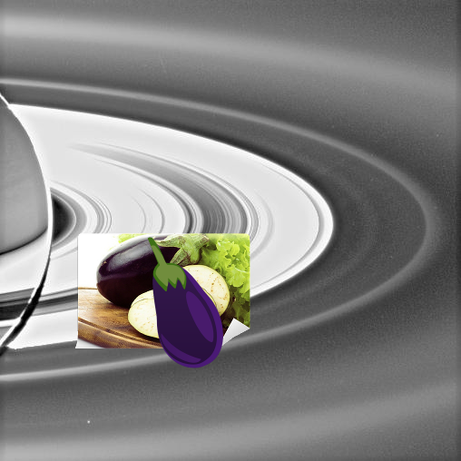

-
An Unexpected Discovery on Galaxy NGC 1512!
-
Something Strange on MGS Mars Orbiter Laser Altimeter MOLA - Mars/Earth Relief Comparison.
-
Something Strange | Infrared Rose.
-
An Unexpected Discovery, A Mystery, A Mystery on KSC-2011-7031!
-
An Unexpected Discovery, Something Strange on Hubble Discovers Bright New Spot on Io.
-
Something Strange @ High Above Saturn Cloud Tops
-
Something Strange ; Hubble Finds an Hourglass Nebula around a Dying Star
-
A Mystery, ??? @ Pluto Majestic Mountains, Frozen Plains and Foggy Hazes
-
A Mystery + Enterprising Nebulae
-
Something Strange – Martian Surface Beneath Phoenix.
-
Something Strange @ NASA Radar Images Asteroid 2007 PA8.
-
Something Strange + Amazing Andromeda Galaxy!
-
An Unexpected Discovery + Galaxy Mission Completes Four Star-Studded Years in Space.
-
Something Strange ; Three dimensional Visualization of Jupiter Equatorial Region
-
A Mystery ; Larry Outcrop in False Color
-
Something Strange ; Color Image of Pluto.
-
A Mystery | Cluster of Moons
-
An Unexpected Discovery ; Bright Soil Near McCool False Color
-
 A Mystery – White Dwarf Stars!
A Mystery – White Dwarf Stars! -
 ??? | A Star-Formation Laboratory!
??? | A Star-Formation Laboratory! -
 An Unexpected Discovery, A Mystery on 'Witch Head' Brews Baby Stars
An Unexpected Discovery, A Mystery on 'Witch Head' Brews Baby Stars -
A Mystery + A Colorful Complex
-
An Unexpected Discovery | Galaxy NGC 1850.
-
An Unexpected Discovery ; A Different View of the Flame Nebula!
-
A Mystery + Hubble Sees a Young Star Take Center Stage.
-
 An Unexpected Discovery on NASA Galaxy Mission Celebrates Sixth Anniversary.
An Unexpected Discovery on NASA Galaxy Mission Celebrates Sixth Anniversary. -
An Unexpected Discovery on ARC-2010-ACD10-0054-016!
-
 Something Strange, An Unexpected Discovery ; Carina Nebula Detail.
Something Strange, An Unexpected Discovery ; Carina Nebula Detail. -
 An Unexpected Discovery + Into the Depths of the Lagoon Nebula
An Unexpected Discovery + Into the Depths of the Lagoon Nebula -
 A Mystery on Southern Pinwheel Galaxy M83
A Mystery on Southern Pinwheel Galaxy M83 -
Something Strange, A Mystery + Mars Polar Lander NOT Found!
-
A Mystery, An Unexpected Discovery ; Moon-Made Rings!